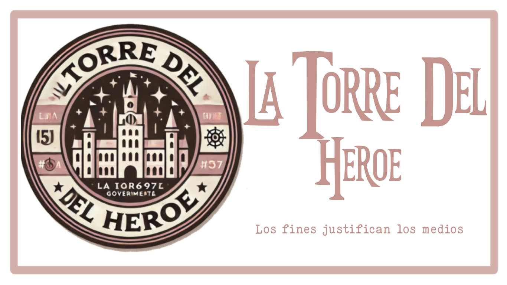

"Nos llaman asesinos por querer acabar con ellos antes de que nos maten… ¿Qué nombre les damos a ustedes por dejarnos morir?"
Bienvenido a la Torre del Héroe, el símbolo de esperanza, valentía y justicia. Aquí es donde nacen las leyendas, donde aquellos con el corazón y la voluntad de proteger se convierten en los guardianes del mundo. La Torre no es solo un edificio; es un ideal, un juramento inquebrantable de que mientras un héroe siga en pie, la luz nunca será opacada por la oscuridad.
Ser un héroe no es solo tener poder, sino saber cómo usarlo para el bien. Es sacrificio, es determinación, es el deber de proteger a los inocentes sin esperar nada a cambio. No cualquiera puede llamarse héroe; solo aquellos dispuestos a darlo todo por la justicia pueden llevar ese título con orgullo.
Algunos dicen que el mundo es un lugar peligroso, lleno de caos e incertidumbre. Nosotros decimos que es un mundo que vale la pena salvar. Porque mientras haya personas que sueñen con un futuro mejor, mientras haya quienes luchen por la paz, la Torre del Héroe seguirá en pie. Somos la última defensa, el escudo de la humanidad, la promesa de que el bien siempre prevalecerá.
Conoce las estrictas normativas que rigen a los héroes.
Descubre cómo funciona la estructura de la Torre.
Conoce a los protectores más poderosos de nuestra era.
Explora el origen de la Torre y su evolución a lo largo del tiempo.